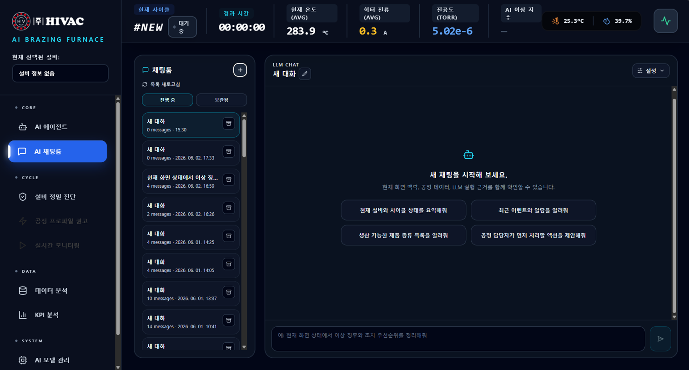
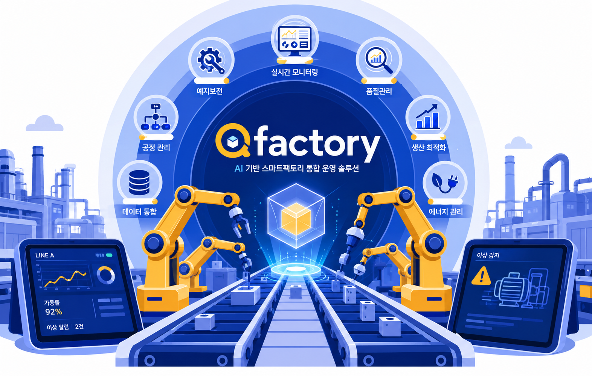
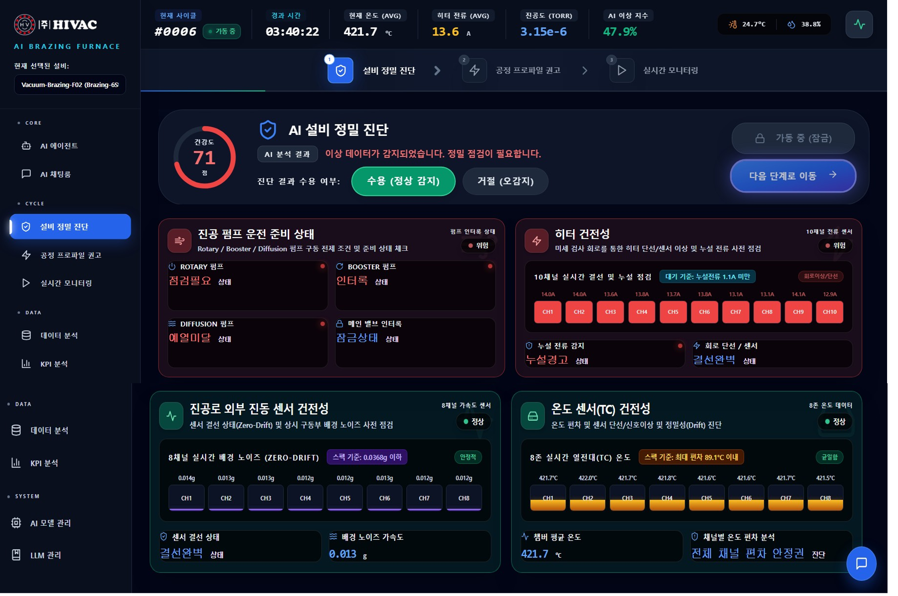
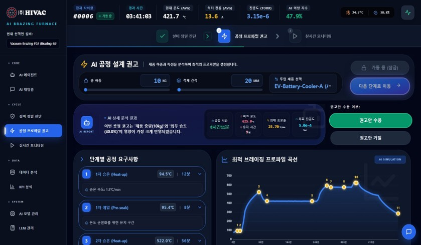
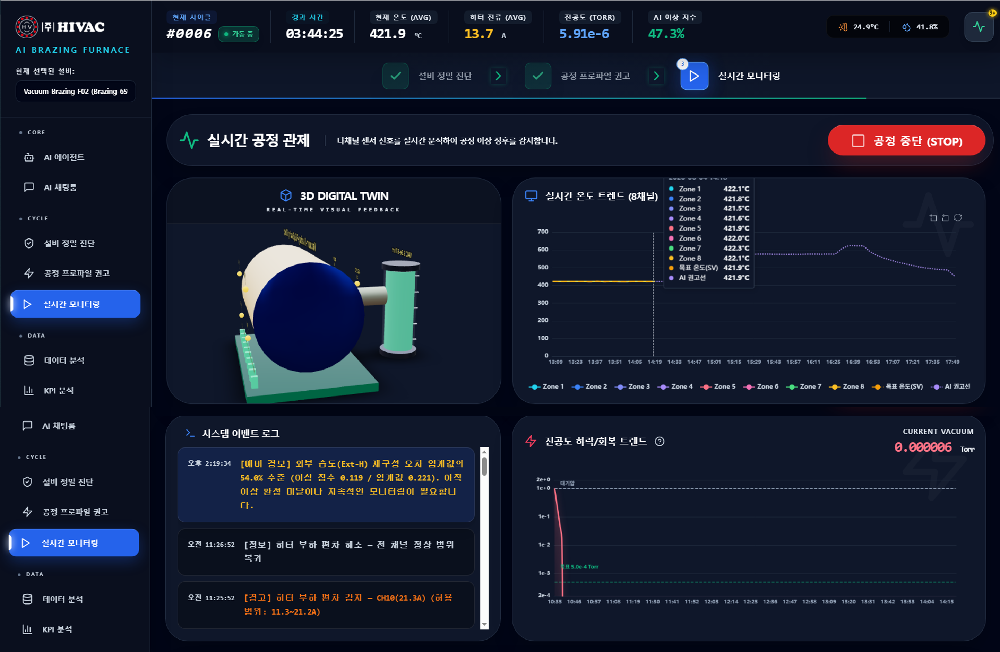
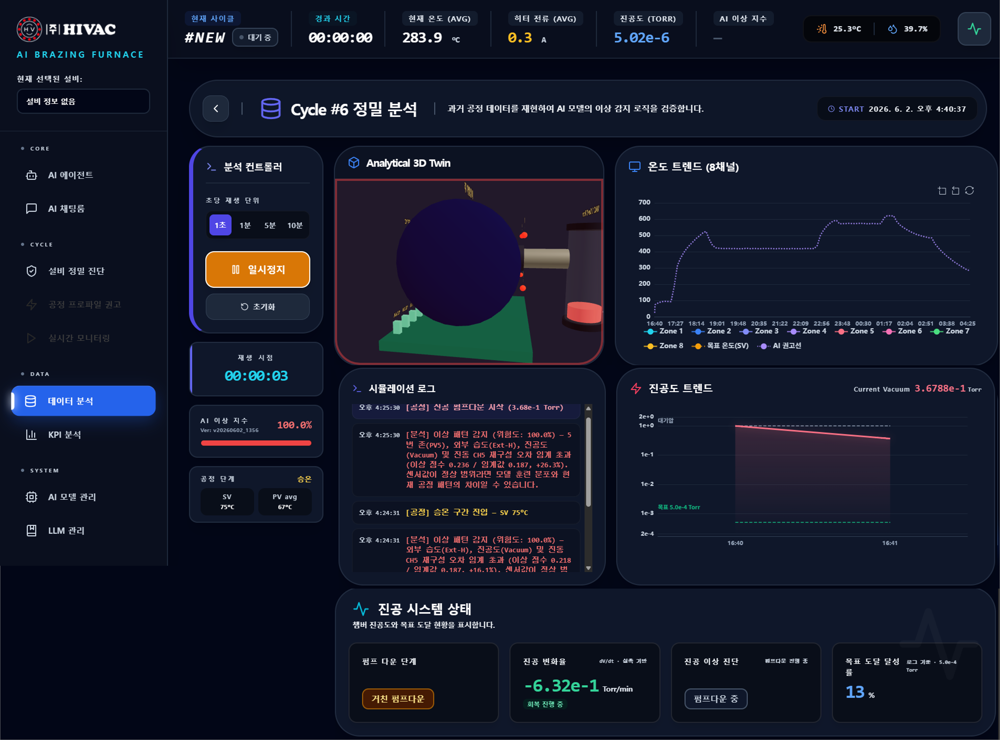
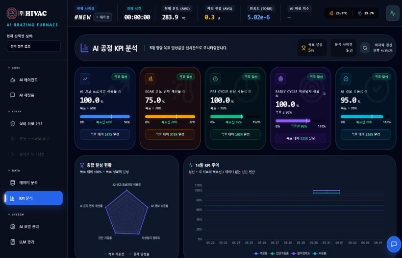
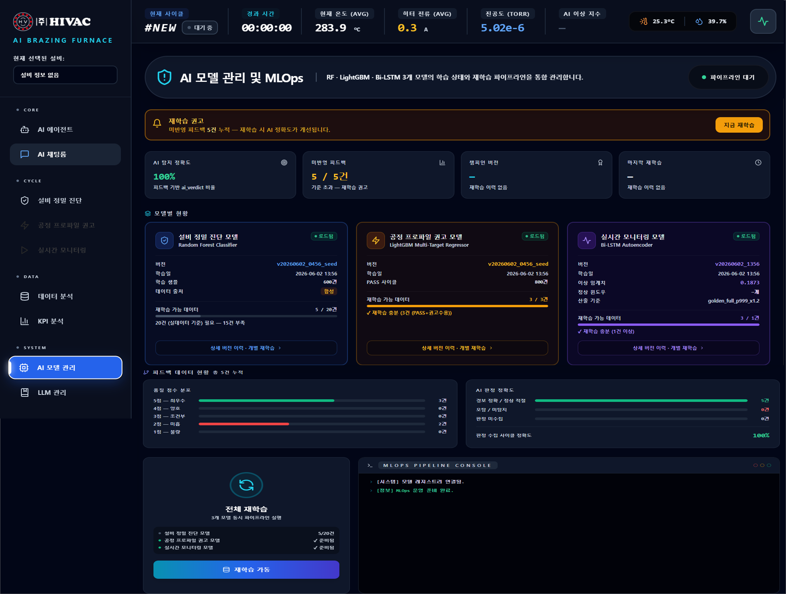

01Data Foundation
AI·공장 운영 데이터 통합
제어·
- 연결 데이터
- 공정·설비·품질·에너지·물류
- 운영 활용
- 정합성 검증, 원인 추적, AI 학습용 표준 데이터
공정·

QFactory는 기존 설비를 유지한 채 필요한 공정의 데이터를 모아 예측 결과를 공정 조치로 연결합니다.

공정 과제에 맞는 기능부터 적용하고, 검증된 범위를 단계적으로 확장합니다.
단계적 도입 기존 설비를 전면 교체하지 않고, 기존 설비 보완용 센서와 엣지 시스템 연계를 활용해 필요한 공정부터 확장합니다.
제어·
열원 생산과 스팀 소비를 함께 분석해 과열·과소 공급을 줄일 운전 조건을 권고합니다.
회전체와 건조 설비의 상태 변화를 분석해 이상·위험도·잔존수명을 예측합니다.
원료·첨가제부터 최종 품질까지 시간·Lot 이력을 연결해 편차 원인을 찾습니다.
영상과 설비 이벤트를 결합해 위험 행동·구역 접근·화재·이상 상황을 감지합니다.
AI 모델의 학습·
설비 상태와 공정 조건, 실시간 운전, 성과 지표를 하나의 흐름으로 분석하고 개선합니다.
펌프·

AI 설비 정밀 진단 — 설비 건강도와 센서 상태 통합 판정
제품 종류와 적재 조건, 과거 공정 결과를 분석해 단계별 온도와 시간을 포함한 최적 운전 프로파일을 제안합니다.

AI 공정 설계 권고 — 작업 조건별 최적 운전 프로파일 제안
3차원 설비 화면과 온도·

실시간 공정 관제 — 다중 센서 추이와 이상 이벤트 통합 확인
완료된 공정을 시간 순서대로 재현해 AI가 이상으로 판단한 시점과 전후 센서 변화를 함께 검증합니다.

공정 사이클 정밀 분석 — 시간축 기반 재현과 이상 원인 추적
설비 건강도와 열 침투, 사이클·

AI 공정 KPI 분석 — 목표 달성도와 사이클별 개선 효과 확인
설비 진단·

AI 모델 관리·머신러닝 운영(MLOps) — 성능 감시와 재학습 파이프라인
기존 임계값 알람만으로 놓치기 쉬운 미세한 변화와 원인, 정비 시점을 AI로 보완합니다.
| 관점 | 규칙 기반 임계 감시 | QFactory 제조 AI |
|---|---|---|
| 이상 감지 | 고정 임계 초과 시 알람(사후) | 정상 패턴 학습 후 미세 이탈 조기 감지 |
| 원인 파악 | 사람이 로그를 수동 추적 | 생성형 AI 질의응답으로 원인· |
| 공정 조건 | 고정 레시피 유지 | 상태· |
| 정비 | 주기· | 잔존수명 예측 기반 예지보전 |
| 운영 | 수동 튜닝· | 데이터 변화 감시· |
기존 알람을 없애는 것이 아니라, 그 위에 AI 판단을 더해 놓치기 쉬운 변화를 먼저 찾는 방식으로 단계적으로 전환합니다.
알람만으로는 잡히지 않는 변화를 다뤄야 하는 공장에 적합합니다.
정상 범위 안에서 서서히 나빠지는 변화는 놓치고, 후공정에서야 문제가 드러나는 환경
담당자가 바뀌면 품질 편차가 생기는 열처리·
고장 시점을 미리 알아야 정비 일정을 짤 수 있는 24시간 가동 공장
설비·